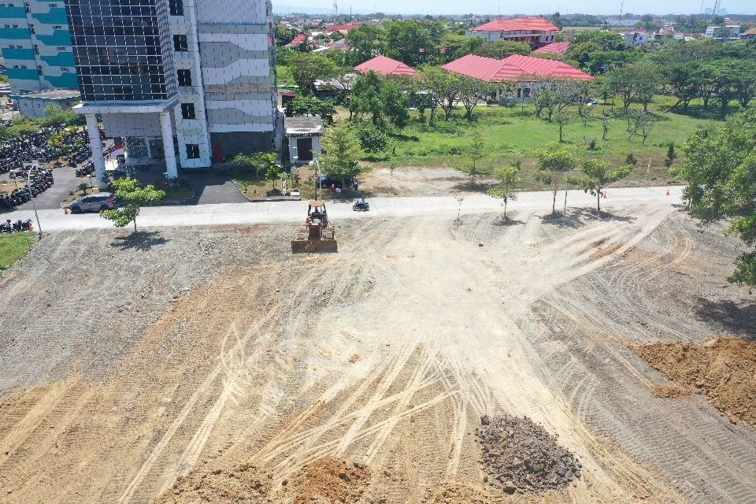

Tentang Kami
Didirikan pada tahun 2024, CV. Gledek Artha Baladika bergerak di bidang konstruksi dan berkomitmen untuk memberikan solusi pembangunan yang berkualitas. Visi kami adalah menjadi pemimpin di industri konstruksi dengan inovasi dan keunggulan. Misi kami adalah memberikan hasil terbaik bagi setiap klien melalui layanan yang profesional dan terpercaya. Dengan pengalaman lebih dari empat dekade, kami terus tumbuh dan menjadi salah satu pelaku utama di industri ini.
